Projects
1. Microbial Explorer (2024)
Developed an interactive web application called Microbial Explorer using JavaScript, CSS, and HTML, designed to help
users easily explore detailed information about various microbes. The app leverages AI techniques to intelligently
fetch and display the most relevant Wikipedia pages for selected microbes, providing users with quick access to
accurate and comprehensive scientific knowledge. This was my first time working with JavaScript.

 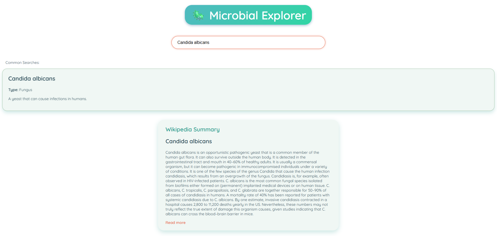
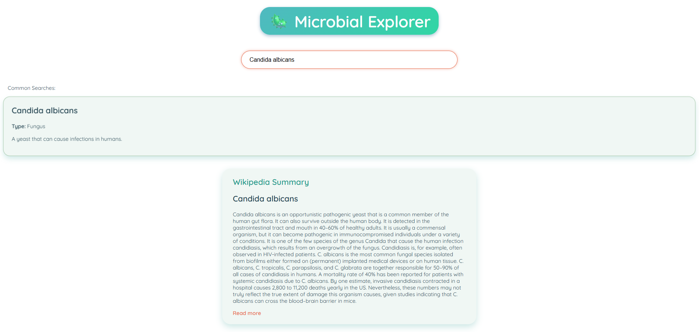
2. Dreamflix Cinema POS System (2024)
Developed a POS(point-of-sale) system for a cinema to help employees with day-to-day operations such as movie
schedualing, maintaining employees, maintaining movie timeslots as well as maintaining seat bookings. It includes
built-in tools for tracking sales, income and employee performance. This project was created as a group assignment
and developed using C#.

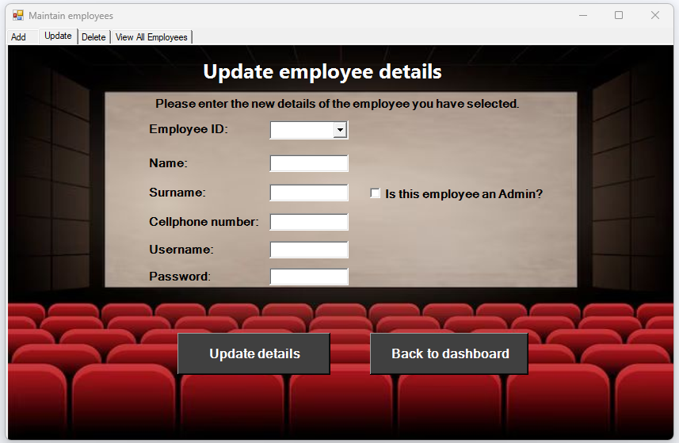 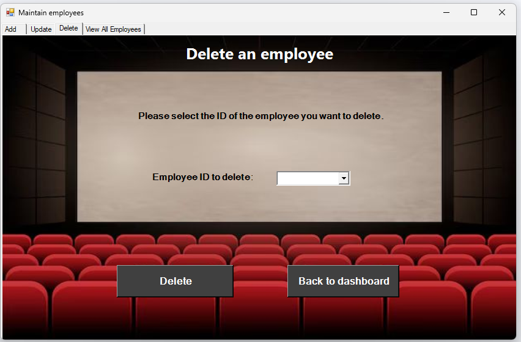 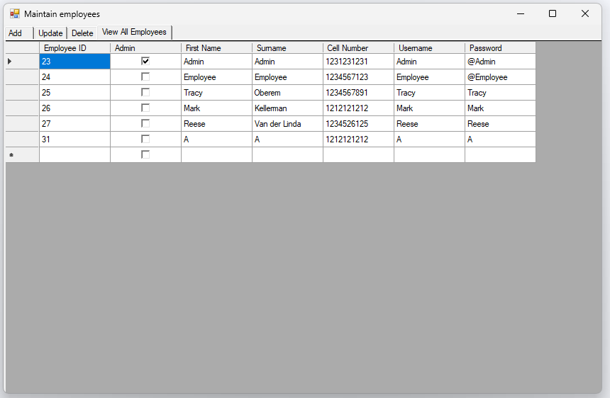
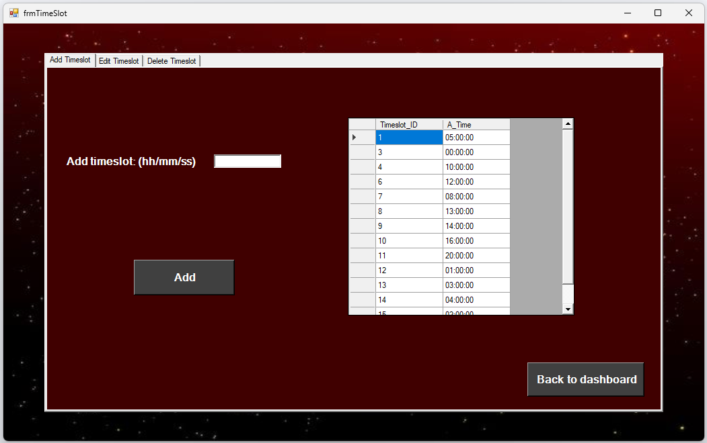 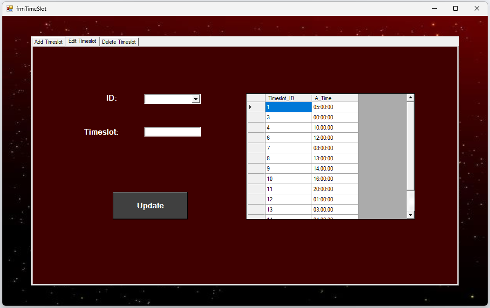

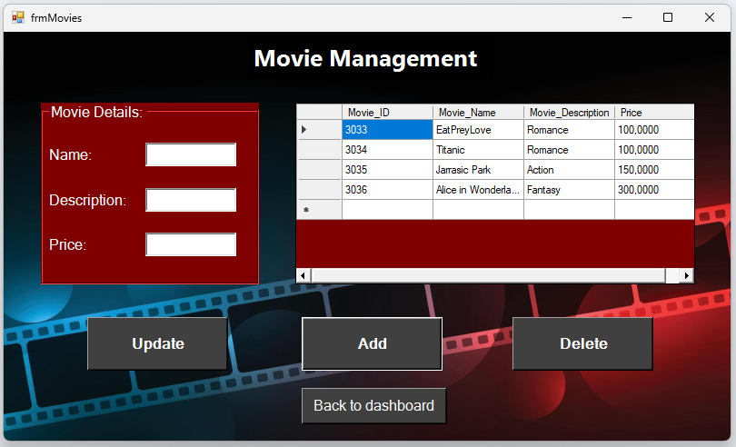 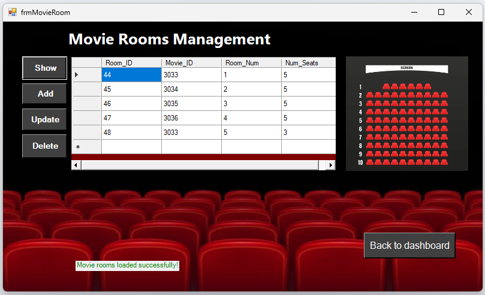 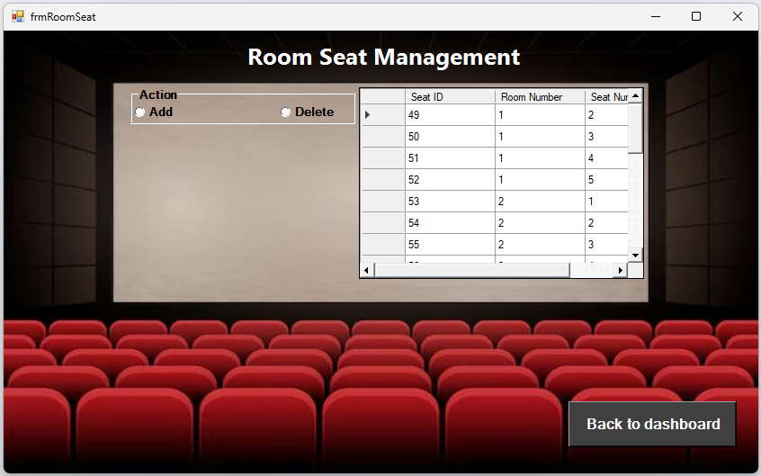
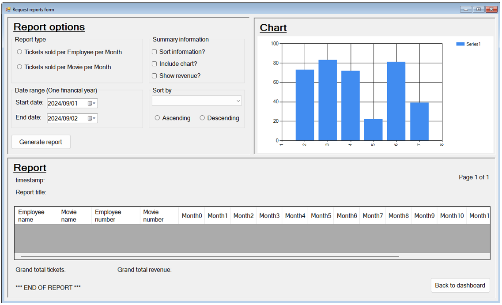
3. Connect Four Java Minigame (2025)
Developed a interactive Connect Four game using Java. Supporting both two-player and single-player
modes, with a AI component included for single-player mode. The game features a simple interface that allows
players to drop disks into a 7x6 grid, including logic to validate moves, check for wins and handel draws. It was my
first time working with basic AI logic.
Skills
CV
You can view or download my CV below:
Download CV